자율 세계의 등장과 새로운 창작 환경
2024년 7월 부천국제판타스틱영화제 BIFAN+ 컨퍼런스에서 한 발표를 옮긴 원문이다. 실시간 엔진이 만든 도시에서 시작해 지능을 갖춘 존재, 현실을 그대로 옮긴 디지털 트윈, 그리고 창작의 주체가 누구인가라는 질문까지 일곱 장으로 이어진다. 발표 당시 넘긴 장표는 절이 끝나는 자리마다 그 구간으로 이어지도록 두었고, 130장 전체는 슬라이드쇼에서 볼 수 있다.
편집자 노트 : 이 글은 2024년 7월 발표 직후에 내가 정리해 발행한 원문이다. 2년이 지나 같은 발표를 다시 정리한 글 세 편을 따로 썼고, 그 사이의 거리를 그대로 볼 수 있도록 이 원문은 고치지 않고 둔다. 문장도 오탈자도 발행 당시 그대로다. 같은 글이 Medium에도 발행돼 있다.
이 글은 지난 2024년 부천국제판타스틱영화제의 일환으로 진행된 BIFAN+에서의 발표 내용을 바탕으로 작성되었습니다.
01새로운 기술의 등장과 디지털 가상 세계의 발전
1–1. 인트로
우리는 지금 인류 역사상 가장 역동적인 기술 변화의 한복판에 서 있습니다. 불과 몇 년 전만 해도 SF 영화 속 상상력의 산물로 여겨졌던 일들이 이제는 우리의 일상과 창작 환경을 근본적으로 바꾸어 놓고 있습니다. 과거의 기술 발전이 인간의 물리적 능력을 확장하는 데 초점을 맞췄다면, 지금의 변화는 우리의 지성과 창의성, 그리고 현실과 가상의 경계 그 자체를 재정의하고 있습니다.
특히 인공지능, 가상현실, 블록체인과 같은 개별 기술들은 서로 융합하며 과거와는 전혀 다른 차원의 디지털 세계를 탄생시키고 있습니다. 이는 단순히 현실을 모방하는 가상 공간을 넘어, 스스로 규칙을 만들고 그 안의 존재들이 자율적으로 상호작용하며 살아가는 ‘자율 세계(Autonomous Worlds)’의 등장을 예고합니다. 생성 AI는 상상하는 모든 것을 시각적으로 구현해내는 창작의 도구를 넘어, 이제는 스스로 스토리를 만들고 세계관을 확장하는 창작의 주체로 진화하고 있습니다. 현실 세계를 그대로 복제한 ‘디지털 트윈’은 AI가 활동할 수 있는 최적의 무대가 되며, 블록체인 기술은 이 가상 세계에 소유권과 신뢰 기반의 경제 시스템이라는 새로운 질서를 부여합니다.
오늘 저는 이 거대한 변화의 물결 속에서 ‘자율 세계’가 어떻게 구축되고 있는지, 그리고 이러한 새로운 패러다임이 창작자들에게 어떤 의미를 던지는지 이야기해보고자 합니다. 기술의 발전을 넘어, 우리의 창작 환경과 문화가 어떻게 재편되고 있으며, 미래의 창작자로서 우리는 어떤 정체성을 갖고 무엇을 준비해야 할까요?
이를 위해 먼저 최신 기술들이 어떻게 디지털 가상 세계를 발전시키고 있는지 살펴보고, 그 안에서 지능을 갖고 살아가는 새로운 존재들을 만나보겠습니다. 그리고 현실과 가상이 연결되는 지점들을 확인하며, 이 새로운 세계가 창작자들에게 제시하는 무한한 가능성과 함께 우리가 마주한 정체성의 고민, 그리고 앞으로 다가올 새로운 창작 문화를 위한 실험과 도전에 대해 함께 고민해보는 시간을 갖겠습니다.
1–2. 실시간으로 상호작용하는 가상세계
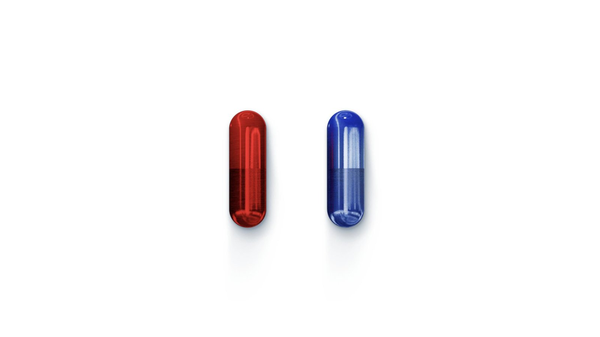
여기에 빨간색과 파란색 두 개의 알약이 있습니다. 매트릭스라는 영화를 기억하시는 분이라면 이 알약의 의미를 알고 계실겁니다. 1999년 개봉한 1편으로부터 이어지는 3편의 트릴로지를 통해 우리에게 가상 세계에 대한 영감과 SF적 상상력을 전해준 작품입니다. 긴 침묵을 깨고 2021년 4편에 해당하는 `The Matrix: Resurrections`이 개봉했는데요, 18년이라는 긴 시간이 흐른 탓에 기술의 발전이나 ‘가상 세계’에 대한 대중들의 인식은 이전과는 달라져있었고, 우리는 이 영화 속의 핵심 소재인 초월적 가상 세계가 이제 더 이상 상상이 아닌 현실의 영역에 가까워져 있다는 사실을 직시하게 됩니다.
영상 속 장면들은 우리에게 익숙한 영화의 연출 기법을 따르고 있지만 사실은 게임 산업에서 주로 활용하는 게임 엔진에 기반한 리얼 타임 랜더링을 통해 보여지는 영상 중 일부입니다. 이것을 실시간 연산을 통해 생성되는 이미지이기 때문에 실제 게임과 같이 자유롭게 카메라를 이동할 수 있고, 캐릭터를 움직이거나 총을 발사하면 그것들이 가상 세계 속 사물들과 물리적인 상호 작용을 일으키게 됩니다. 정해진 단방향이 아닌 리얼타임 인터랙티브 스토리텔링이라고도 볼 수 있겠죠. 이미 이러한 제작 방식만으로도 상당한 퀄리티를 기대할 수 있게된 덕분에 과거 큰 비용과 노력을 필요로 했던 게임의 시네마틱 영상, 컷 씬 등의 많은 부분에 게임 엔진의 리얼 타임 랜더링 방식이 적용되고 있습니다.
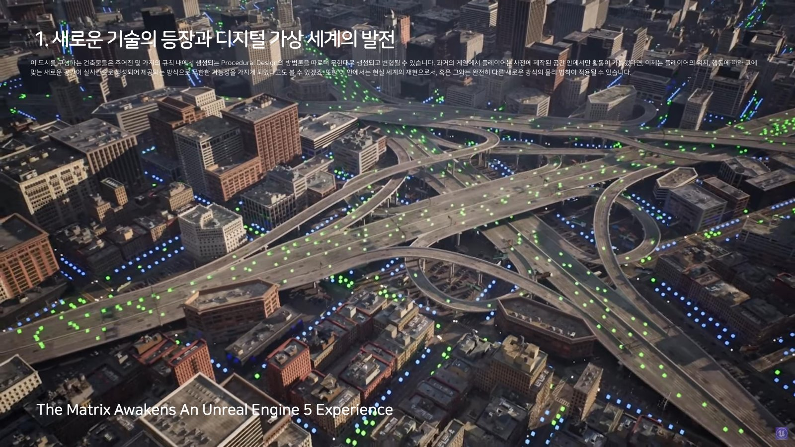
대표적인 게임 엔진 중 하나인 언리얼 엔진는 현재 게임 산업 만이 아닌, 영화, 광고, 공연 등 다양한 영역에서 활용되고 있죠. 언리얼 엔진5가 처음 공개될 당시 ‘The Matrix Awakens An Unreal Engine 5 Experience Demo’가 무료로 제공되었는데요, 이 거대한 가상 세계 속 사람이나 자동차 들은 주어진 규칙 안에서 자율적인 판단에 의해 움직이는 독립된 개체로 작동합니다. 더불어 시간, 날씨 등의 환경적인 요소 또한 플레이어에 의해 언제든 변화할 수 있습니다.
이 도시를 구성하는 건축물들은 주어진 몇 가지의 규칙 내에서 생성되는 Procedural Design의 방법론을 따르며 무한대로 생성되고 변형될 수 있습니다. 과거의 게임에서 플레이어는 사전에 제작된 공간 안에서만 활동이 가능했다면, 이제는 플레이어의 위치, 행동에 따라 그에 맞는 새로운 공간이 실시간으로 생성되어 제공되는 방식으로 무한한 가능성을 가지게 되었다고도 볼 수 있겠죠. 또한 이 안에서는 현실 세계의 재현으로서, 혹은 그와는 완전히 다른 새로운 방식의 물리 법칙이 적용될 수 있습니다.
1–3. 소유 가능한 디지털 캐릭터의 등장
이러한 가상 세계 안에는 플레이어로서의 캐릭터(Player Character), 그리고 플레이어가 아닌 NPC(Non-Player Character)와 같은 캐릭터 등이 함께 공존합니다. 이 데모 안에서 마주하게 되는 수십만 명의 실사풍 캐릭터들은 언리얼 엔진의 메타휴먼이라는 솔루션을 통해 제작되었는데요, 이 솔루션을 활용하면 높은 수준의 전문성이 없이도 누구나 쉽게 버추얼 캐릭터를 생성하고 활용할 수 있습니다.
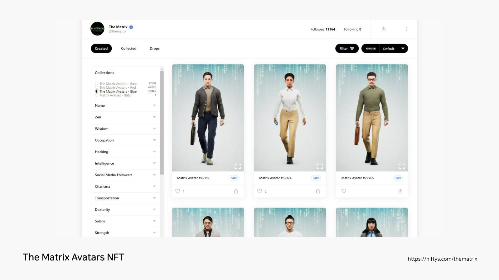
매트릭스의 배급사인 워너 브라더스는 영화 프로모션의 일환으로 블록체인과 스마트 컨트랙트 기술 기반의 NFT(Non-Fungible Token) 형식으로 단역의 메타휴먼 캐릭터들을 대중에게 판매했는데, 수십만 개의 캐릭터는 모두 서로 다른 모습을 가지고 있었고, NFT를 구매한 팬들은 자신의 블록체인 월렛 안에 마치 게임 아이템과 같이 이들 캐릭터를 소유할 수 있었습니다.
워너 브라더스는 약간의 게임 요소 이외에 그 이상의 경험 요소를 제공하지는 않았지만, 우리는 이들을 더 많은 영화나 게임 등에서 NPC로 활용될 수 있는 고유한 IP로 발전할 수 있음을 상상해볼 수 있습니다. 현재 발전한 블록체인 기술과 인프라를 활용하면 NFT 캐릭터 보유자들이 자신의 IP를 통한 수익을 창출하는 비즈니스 모델을 구축하는 것도 어려운 일은 아닙니다.
02지능을 갖춘 가상 세계의 새로운 존재들
2–1. 지능과 감성을 지닌 NPC의 등장
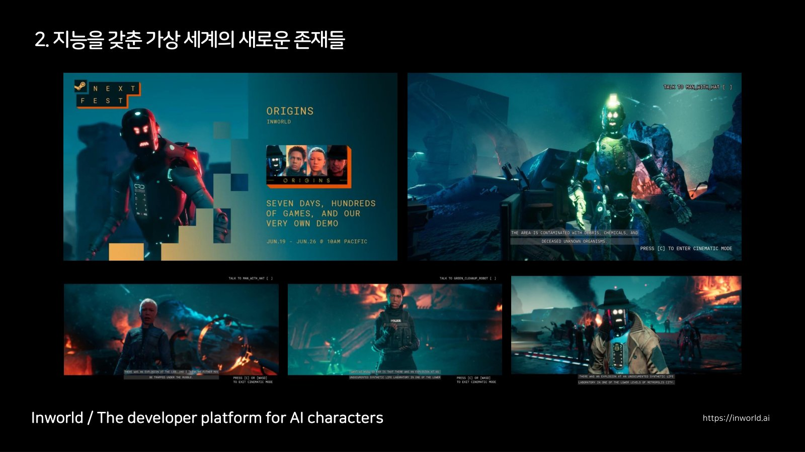
Inworld는 현재 가장 보편적으로 활용되는 거대언어모델(LLM) 기반의 AI 캐릭터 생성 솔루션입니다. 캐릭터의 기본 외형에 텍스트를 기반으로 고유한 성격과 배경 요소들을 입력하면, 최신의 발전된 LLM를 통해 자연어로 소통하고 상호작용하는 생동감 있는 NPC로 역할을 수행하게 됩니다. 이렇게 생성된 AI 에이전트로서의 NPC는 주요 게임엔진이나 웹을 통해 다양한 게임 및 서비스, 브랜드의 다양한 마케팅 활동 등과 연동됩니다.
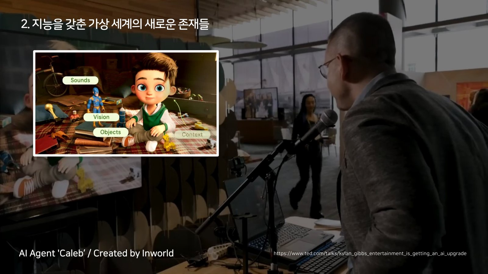
‘Entertainment Is Getting an AI Upgrade’ 라는 제목의 TED 강연에서 Inworld의 코파운더 카일란 깁스(Kylan Gibbs)는 고도의 자율성과 독특한 개성을 동시에 갖춘 AI Agent ‘칼렙(Caleb)’을 소개합니다. 연출된 씬 안에서 칼렙은 참여자의 음성 대화에 맞춰 상호작용하며 무한히 생성되는 스토리텔링의 가능성을 제시합니다.
2–2. AI 에이전트의 자율적 경제 활동
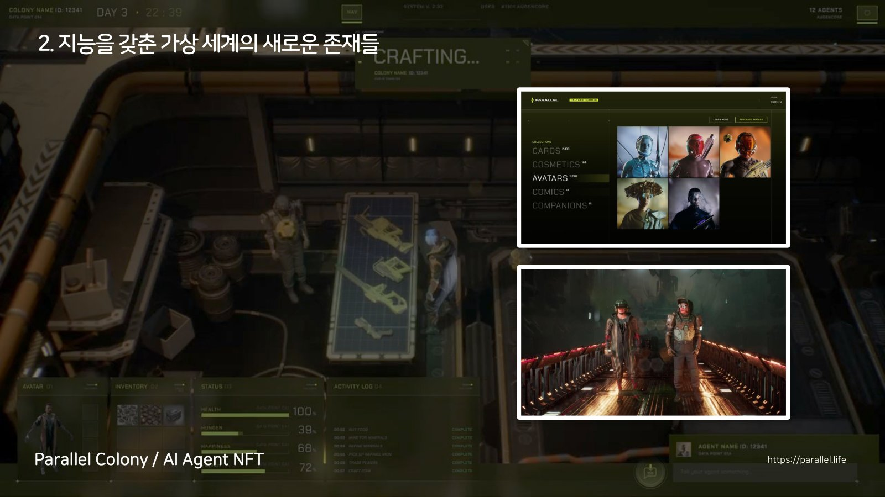
블록체인 기술이라고 하면 많은 분들이 투자, 자산 등의 금융적인 경험을 먼저 떠올리실텐데요, 사실 블록체인은 거대한 네트워크이자, 데이터베이스, 프로토콜 등의 다양한 기능으로 역할을 하는 한편, 디지털 안에서 계약, 약정, 거래 등 신뢰 기반의 강력한 상호작용을 구현할 수 있는 스마트 컨트랙트라는 요소를 통한 ‘월드 컴퓨터’로서의 성격을 갖는 독특한 기술입니다.
Echelon이라는 개발사는 Parallel이라는 현재 SF 스타일의 IP를 구축하고 있는데요, 그 중에는 메타 휴먼을 통해 제작된 여러 캐릭터들이 LLM을 통해 자율적으로 활동하며 임무를 수행하고 보상을 획득하며 가상의 사회 속에서 살아가는 ‘Colony’라는 독특한 장르의 게임이 있습니다. 이 게임에서 NFT를 통해 소유권이 부여된 각각의 캐릭터이자 ‘AI 에이전트’는 스스로 그 안에 블록체인 월렛과 암호화폐, 아이템 등의 다양한 자산을 보유하면서 스마트 컨트랙트를 통해 상효작용하며 자율적인 경제 활동을 수행합니다.
최근에는 이렇게 구축된 세상을 ‘자율 세계(Autonomous World, AW)’라고 부르는데 기술적 측면에서 뿐만 아니라 스토리텔링의 측면에서도 매우 독특한 컨셉이 아닐 수 없습니다.
03현실 세계의 재현, 가상 세계와의 연결
3–1. 현실 세계와의 상호작용, AI 에이전트
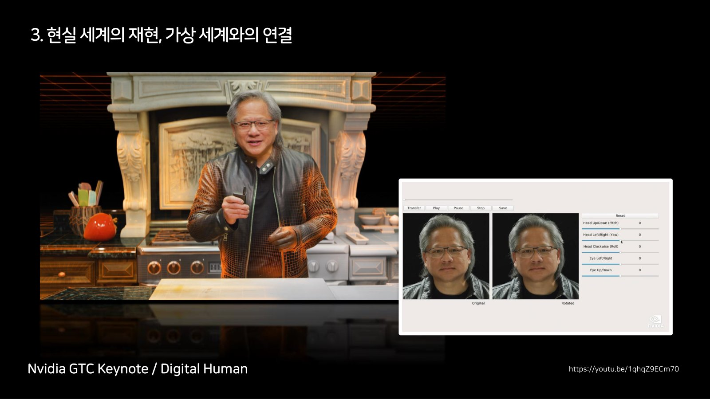
이제 가상 세계는 단지 영화나 광고, 게임과 같은 창작 생태계만이 아니라 대다수의 거대 IT 기업들이 각축전을 벌이는 치열한 전장이 되고 있습니다. 얼마전 기업 시가 총액 1위에 올라서며 주목 받은 엔비디아는 지난 2021년 개발자 컨퍼런스의 키노트 발표 후 이 날 등장한 엔비디아의 CEO Jensen Huang의 모습이 사실은 엔비디아의 디지털 기술을 통해 구현된 버추얼 휴먼이었음을 공개하며 모두를 놀라게 했습니다.
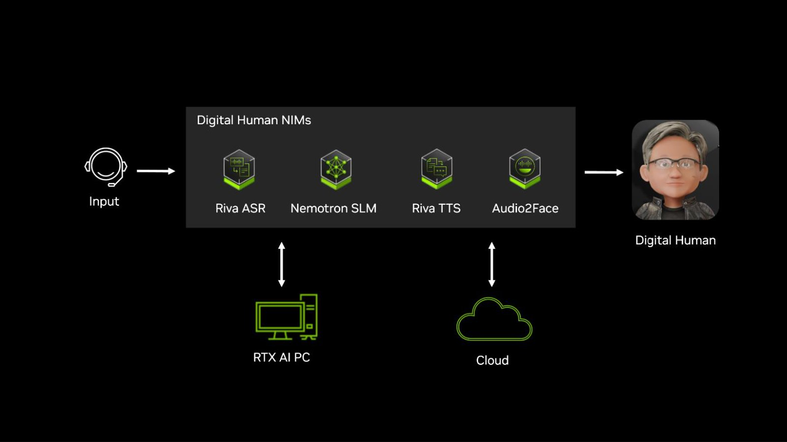
동시에 Jensen Huang이 가진 과거의 지식과 경험들을 기반으로 자연어 기반의 대화할 수 있는 귀여운 캐릭터 형태의 아바타를 선보이며 ‘AI 에이전트’ 시장의 본격적인 시작을 알리기도 했습니다. 이러한 귀여운 AI 에이전트의 뒤에서는 우리가 다 이해하고 따라잡기 어려울 정도의 역동적으로 발전하고 있는 수많은 기술들이 복합적으로 작동하고 있죠.
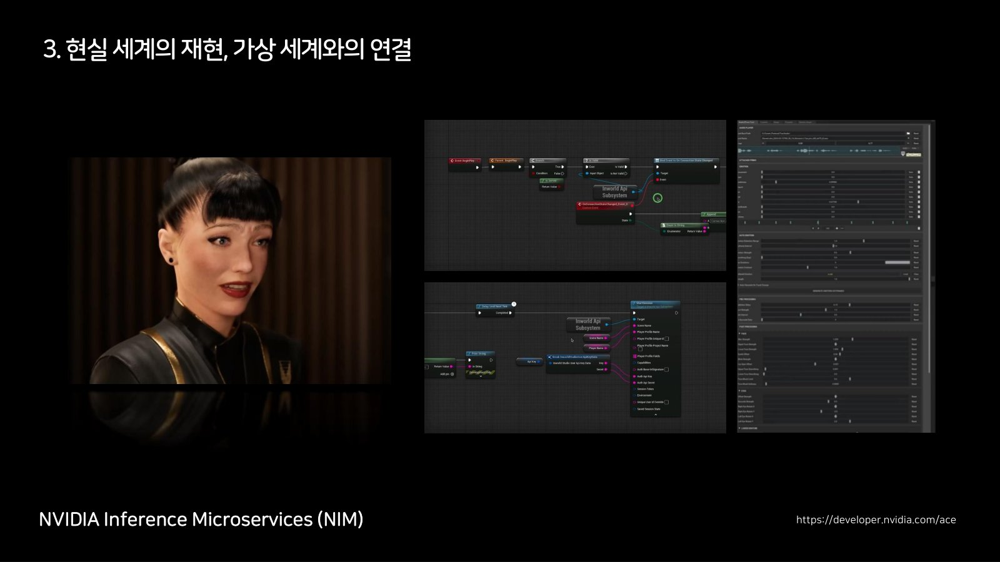
최근 엔비디아는 ‘NVIDIA Inference Microservices (NIM)’라는 이름으로 AI 에이전트 기술이 기존의 일상 친화적인 여러 서비스들과 연결될 수 있는 솔루션을 제공하기 시작했습니다. 만약 게임 엔진을 통해 영화적인 경험을 제공하는 인터랙티브 스토리텔링 안에서 주인공 캐릭터가 상점에서 AI 에이전트인 점원과의 대화를 통해 구매한 상품이 여러분의 집으로 배송된다면 우리는 어디까지를 스토리텔링의 범위라고 봐야할까요.
3–2. 현실 세계 데이터의 개방과 활용
우리가 살아가고 있는 지구는 이미 많은 부분이 디지털화되어 가상 세계 안에 존재하고 있습니다. 이러한 데이터는 특별한 지식이나 자격을 가진 연구자들에게만 개방되어 있는 것이 아니라, 저렴한 가격의 상용 소프트웨어, 혹은 게임 타이틀의 형태로 누구나 쉽게 이용 가능한 상황입니다..
마이크로소프트가 제공하는 ‘플라이트 시뮬레이터(Flight Simulator)’는 지구를 통체로 3D 모델화한 거대한 가상 세계 경험을 제공합니다. 플라이트 시뮬레이터는 위성 정보 및 마이크로소프트의 클라우드 기술을 기반으로 지금도 계속적으로 업데이트가 진행되고 있습니다. 플레이어들은 여기에 실제 비행기의 콕핏 인터페이스를 재현한 컨트롤러, 조금 더 넓은 시야와 몰입감 있는 경험을 구축하기 위해 다수의 디스플레이 등을 구매해가며 지금도 가상의 지구에서 많은 시간을 보내고 있죠.

‘프로젝트 플라토(Plateau)’는 일본 국토교통성 주도로 구축된 지리 정보 시스템(GIS, Geographic Information System), 지리 공간 데이터 프로젝트로, 공개 데이터 포멧을 통해 누구나 무료로 다운로드 받아 자신에게 익숙한 툴 내에서 활용할 수 있습니다. 이러한 데이터는 현실 세계의 사람들에게 편익을 제공하는 용도로 사용될 수 있지만, 다른 관점에서는 특정 시간, 특정 장소를 가상 세계 안에 영구적으로 보존하기 위한 목적, 혹은 단순 재미나 창의성 발현을 위한 목적 등 어떤 방식으로든 활용될 수 있습니다. 재난이 많이 발생하는 일본의 입장에서는 보존이라는 측면도 한편으로는 중요할 수 있겠다는 생각이 들기도 합니다. 2027년까지 일본 내 500개 도시가 매우 사실적인 수준으로 구현될 예정이라고 합니다.
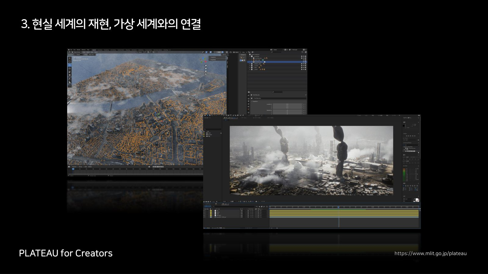
지금 보시는 영상은 플라토의 데이터를 활용하여 제작된 전문적인 창작자들의 영상 창작물입니다. 현재 온라인 상에는 이러한 영상의 제작 과정과 노하우를 공유하는 다양한 교육 콘텐츠들이 함께 공개되어 있습니다.
3–3. 디지털 트윈, AI가 활약하는 새로운 무대
앞서의 몇몇 사례를 통해 확인할 수 있었던 개념을 우리는 ‘디지털 트윈’이라고 부릅니다. 마이크로소프트, 엔비디아 등 거대 IT 기업들은 인류 역사상 최대의 컴퓨팅 파워와 발전된 AI 기술을 통해 우리가 살아가고 있는 현실 세계의 디지털 트윈을 계속적으로 고도화하고 있습니다.
지금 보시는 사례는 디지털 트윈이 빠르게 도입되고 있는 스마트 팩토리의 개념을 설명하는 영상입니다. 현실 공간 안에 배치된 수많은 센서, 카메라 등을 통해 실시간으로 연동되는 가상 세계를 통해 전 세계 어디서나 현실 공간 안에서 벌어지는 일들을 확인하고 이해할 수 있는데, 여기서 나아가 전문적인 소프트웨어가 아닌 모바일 메신저 등에서 텍스트 메시지를 전송함으로써 이 안에서 활동하고 있는 AI 에이전트들과 소통하며 역할을 부여하는 일도 가능합니다.
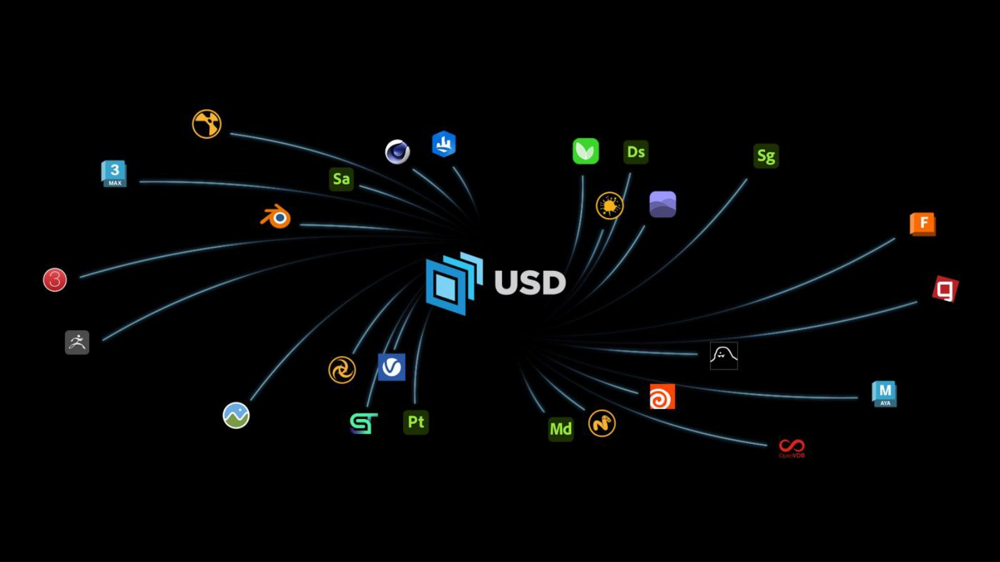
앞서 게임과 같은 가상 공간에서의 AI 에이전트가 버추얼 휴먼 등의 형태였다면, 여기서의 AI 에이전트는 현실 세계 안에서 물리적인 형태를 가진 로봇이나 기계들이 포함될 수 있습니다. 보다 발전된 디지털 트윈을 위한 노력은 현재 단일 기업이 아닌 엔비디아, 애플, 픽사 등 다수의 주체들이 연합하여 ‘USD(Universal Scene Description) 포멧’와 같은 새로운 형태의 표준화를 추진함으로써 보다 많은 영역으로 확대, 통합되는 중입니다.
중요한 사실은 이렇게 디지털로 구현된 가상 세계는 AI 에이전트가 활약하기에 최적의 환경이라는 점입니다. 현실 세계가 디지털 세계 안에 미러링되어 구현되고 실시간 연동되는 가운데, AI를 통해 증강되는 세계, 여기에 다양한 캐릭터, 세계관 등의 IP가 더해진다면 우리는 더 이상 하나의 장르로서의 SF가 아닌, 삶으로서의 SF를 마주하게 될지도 모릅니다. HBO의 드라마 ‘웨스트월드’에서 보았던 로봇 형태의 AI 에이전트들을 통해 경험되는 현실 세계의 테마파크가 현실에 가까워지고 있음을 체감하게 됩니다.
04점점 높아지는 가상 세계의 위상
4–1. 메타버스, 인터넷의 다음 버전
전세계 게이머들이 가장 많은 시간을 보내는 게임 중 하나인 ‘Fortnite’의 개발사인 Epic Games의 CEO Tim Sweeney는 “메타버스는 인터넷의 다음 버전이다 사람들은 메타버스에서 일을 하거나 게임, 쇼핑을 하면서 시간을 보낼 것이다”라고 말했습니다. 그리고 메타버스라는 표현을 통해 설명한 다음 단계의 가상 세계의 비전은 다음과 같은 기술 요소들을 통해 뒷받침됩니다.
- 리얼 타임 랜더링
- 디지털 트윈으로서의 데이터
- 제너레이티브 AI 모델
- 블록체인 / 스마트 컨트랙트
- 표준화된 포멧과 툴
가상 세계를 위한 기술과 경험은 더 이상 현실 세계를 재현하기 위한 보조적인 수단이나 잉여적인 경험에 한정되는 소비 대상이 아닙니다. 그리고 이를 통해 앞으로 열리게 될 새로운 기회들은 점차 현실 세계의 사회, 경제, 정치, 문화, 예술 등 전 영역에 걸쳐 큰 영향을 미치게 될 것입니다. 저는 이러한 변화 가운데 새롭게 생겨나는 가치는 앞서 긴 시간에 걸쳐 형성된 현실 세계의 가치들과 상호보완적인 형태로 빠르게 결합될 것이라고 전망합니다.
4–2. 생성 AI와 무한 세계의 가능성
한정된 공간인 현실 세계와 달리 게임과 같은 가상 세계는 점차 높은 자유도와 방대한 면적을 기반으로 하는 ‘오픈 월드’의 형태로 발전하며 그것들의 총합은 이미 현실 세계 공간의 면적을 가볍게 넘어선지 오래입니다. 그 중에서도 광할한 우주를 배경으로 하는 ‘No Man’s Sky’와 같은 게임에서는 각 플레이어마다 새롭게 생성된 하나의 행성이 주어지게 되고, 이러한 행성 사이를 넘나들며 탐험하는 우주 공간은 숫자로 환산하기 어려울 만큼의 무한한 세계로 표현됩니다.
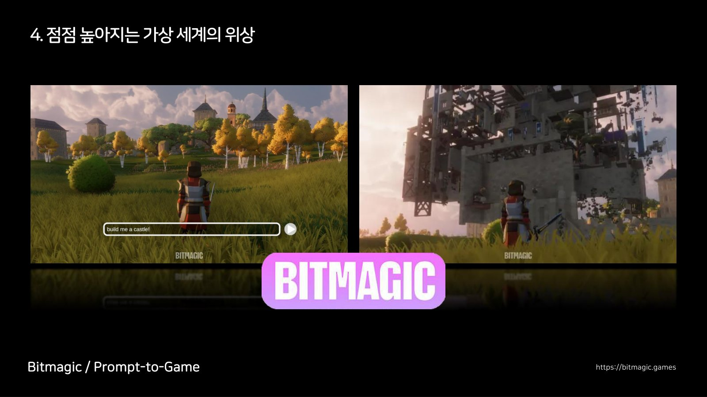
Bitmagic는 생성 AI가 2D 이미지, 3D 모델 등의 에셋을 생성하는 것 뿐만 아니라 게임의 컨셉, 매커니즘까지도 프롬프트 입력을 통해 실시간으로 생성하는 새로운 형태의 게임입니다. 이제 막 실험 중인 단계이지만 머지 않아 많은 게임들이 이와 같은 형태로 하나의 장르를 형성하게 될지 모를 일입니다.
4–3. 가상과 현실의 통합, 새로운 삶의 방식
‘레디 플레이어 원’은 지난 몇 년간 가상 세계에 대한 상상력을 이야기할 때 참 많이 언급된 영화 중 하나입니다. 이 영화에는 우리가 현재 구매 가능한 ‘Meta Quest’나 ‘Apple Vision Pro’와 같이 몰입감을 전달하는 VR/MR 헤드셋 형태의 미래 디바이스가 등장하는데, 이를 통해 영화 속 배경의 대다수 사람들은 현실의 물리 세계와 신체가 아닌, 가상 세계의 또 다른 사회 속에서 사람들을 만나고, 서로 경쟁하며 실질적인 경제 활동을 이어가게 됩니다.
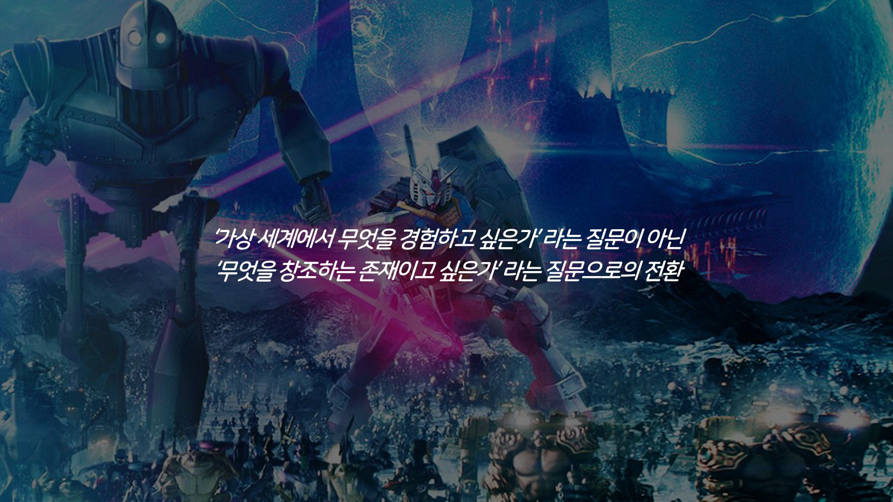
마지막 장면에서는 우리가 알고 있는 가상 세계 속의 여러 캐릭터들이 자신들의 세계를 위협하는 존재에 맞서 싸우는 장면이 등장합니다. 그리고 이들 캐릭터 뒤에는 정작 현실 세계에서의 생존을 위해 기업에 충성하는 노동자들이 존재하죠. 이 영화는 앞서 말씀드린 가상 세계에서의 가치가 현실 세계와 동일한 지위를 가지게 된 세상을 흥미롭게 그려냈다고 생각합니다. 이 영화의 세계관에서 사람들은 더 이상 가상 세계와 현실 세계를 구분하거나 차등화 하지 않습니다. 오히려 통합된 세계관 안에서 더 나은 존재가 되어 더 나은 삶을 살아가기 위한 실질적인 방법들을 고민하게 됩니다.
05생성 AI 시대의 창작자로서의 정체성 변화
5–1. 현실의 기억과 생성된 기억 간의 모호한 경계
지금 보시는 것은 제가 우연히 발견한 한 인플루언서의 SNS 계정인데요, 최근 빠르게 발전하고 있는 생성 AI 기술을 활용해 자신의 어린 시절 사진으로부터 생성한 5초 분량의 영상을 함께 포스팅했습니다. 이 영상과 함께 남긴 글이 우리에게 많은 걸 생각하게 합니다.
“현실에서 실제로 이런 일이 일어나지 않았는데, 영상으로 생성되면 새로운 세계관을 덮어쓰는 듯한 묘한 느낌을 받는다. 기억의 트리거로서 기록이 생성되면 기존의 모호했던 기억은 쉽게 덮어 쓰여진다.”
이 인플루언서는 우리의 기억은 점점 흐릿해지다가 언젠가 소실되고 마는데, 사진으로부터 생성된 영상이 주는 생생함에 의해 기억이 덮어 쓰여질수록 무엇이 실존했던 일이고 어느 쪽이 진짜 자신의 기억인지 헷갈리게 된다는 설명입니다. 저점 흐릿해져가는 우리의 기억을 보조하기 위해 활용되던 사진, 영상 등의 미디어는 생성 AI 시대에 접어들면서 이제는 상시 의심받는 존재, 다른 한편으로는 의도치 않게 우리에게 위협과 위해를 가하는 존재가 되어버렸습니다.
5–2. 상상을 현실로 만드는 생성 AI 도구
앞서의 영상은 Luma Labs가 개발한 ‘Dream Machine’이라는 솔루션을 통해 생성된 이미지입니다. 이미 많은 분들께서 직접 사용해보셨을지도 모르겠는데요, Dream Machine은
- 텍스트와 이미지로부터 2분 내에 5초 분량, 1360x752 해상도의 비디오 클립을 생성
- 생성 결과물의 무작위성을 낮추고, 캐릭터, 라이팅, 카메라, 물리엔진 등의 요소를 세밀하게 컨트롤
의 성능을 통해 우리가 가진 상상력을 매우 사실적이고 전문적인 영상으로 표현해줍니다.
또 다른 영상 생성 솔루션인 Runway의 Gen-3는 지난 주 공개된 이후 수많은 창작자들이 자신이 생성한 영상을 SNS에 공유하며 다양한 감정들을 쏟아내고 있죠.
5–3. 창작의 주체는 누구인가: 새로운 질문의 시작
이러한 기술의 배경에는 현실 세계로부터 수집되고 학습된 방대한 데이터가 존재합니다. 그로 인해 우리는 현실 세계에 실재하는 것에 비해, 이렇게 생성된 가치에 대해서는 다소 경계하는 측면이 없지 않습니다. 지금 우리는 아래와 같은 수많은 논란, 논쟁 속에 머물러 있습니다.
- 사람의 배제 vs 사람의 참여
- 사람과 결합 vs 새로운 존재
- 학습의 주체 vs 학습의 대상
- 창작의 도구 vs 창작의 주체
- 가치의 소유 vs 가치의 도용
저는 이러한 고민거리들이 단기간 내에 해결될 것이라고 기대하지는 않습니다. 하지만 조금만 관점을 바꿔서 생각해보면 어떨까요? 지금의 앞으로 가상 세계 안에 존재하게 될 ‘또 다른 존재’가 학습의 대상이자 창작의 주체가 된다면, 우리가 현재 손에 쥐고 놓치지 않으려고 애쓰는 수많은 가치들이 시간이 지나 애초에 그러한 새로운 존재로부터 시작된 그들의 소유로부터 비롯된다면? 지금 우리가 가지고 있는 여러 고민거리들이 더 이상 유효할까요?
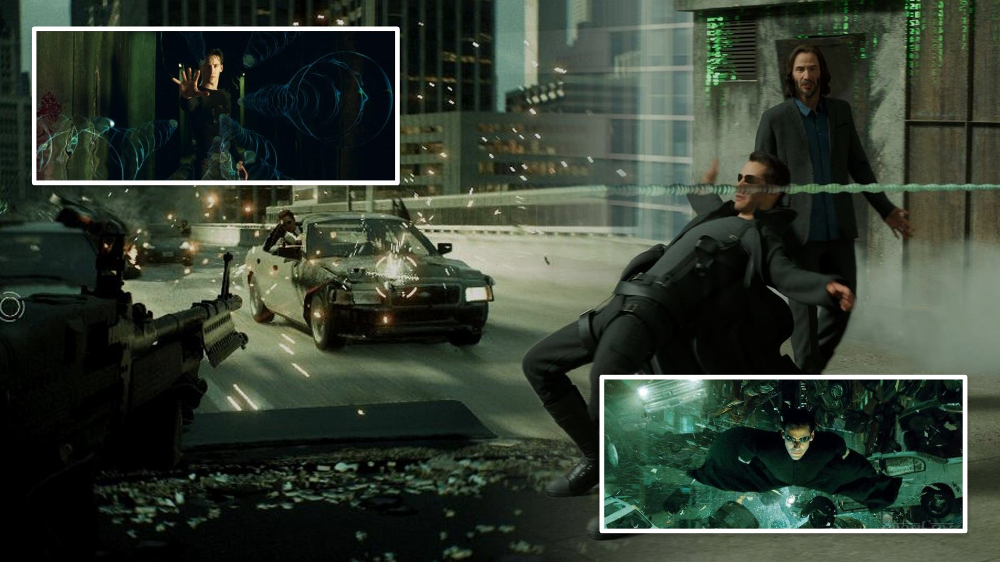
앞서 언급했던 영화 매트릭스 속 주인공 네오는 디지털 가상 세계의 법칙을 이해하고 그것을 초월한 존재로 거듭나게 됩니다. 지금 우리가 마주하는 현실 가운데 네오는 과연 창작자로서의 우리들 자신일까요, 아니면 새롭게 등장하는 AI 기술 그 자체일까요? 결과를 예상하기는 아직 이르지만 적어도 개개인으로서의 창작자로서가 아니라, 역사를 통해 몇 번이고 반복되어 왔던 것처럼 변화의 최전선에서 앞서 행동하고 실험하는 문화적 창작 집단으로서 대응해 나간다면 ‘우리’라는 존재가 네오가 될 수 있는 확률이 조금은 더 높아지지 않을까요?
06생성 AI 시대의 새로운 창작 환경과 문화
이러한 가설로부터 앞으로 우리가 맞이하게 될 새로운 창작 환경과 창작 문화에 대해 다음의 4가지 정도를 이야기해보고자 합니다.
6–1. 새롭게 정의되는 디지털 세계의 법칙
우리는 이미 현실 세계의 물리 법칙에 많은 부분 익숙한 편입니다. 그리고 각자 시점과 정도의 차이는 있겠지만 디지털 기반의 가상 세계에 대해서도 조금씩 익숙해지는 중이죠. 그러나 생성 AI가 우리에게 가져온 변화는 그동안 익숙함을 거스르는 또 다른 세계의 법칙처럼 느껴집니다. 우리는 먼저 이것을 받아들이고 매트릭스의 네오와 같이 먼저 디지털 가상 세계의 법칙을 이해하고 그 안에서 초월적 지위를 가질 수 있어야 합니다.
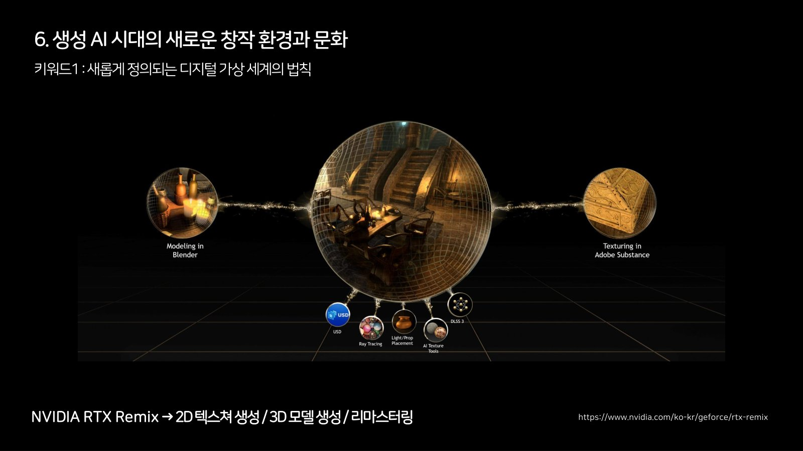
Krea AI, Magnific, NVIDIA RTX Remix 등의 도구가 작동하는 과정을 보면 알 수 있듯, 디지털 기반의 가상 세계는 더 이상 기존의 해상도 개념이나 2D 텍스쳐, 3D 모델, 랜더러 등에 종속되지 않습니다. 이것은 새로운 창작 뿐만 아니라 이미 완성되어 있는 수많은 과거의 창작물들을 현 시점 기준의 최상의 창작물로 다시 생성해낼 수 있습니다. 이러한 접근은 상업적 목적의 창작과는 조금은 조금은 다를 수 있습니다. 우리는 이미 수십 년간에 걸친 가상 세계에 대한 경험과 추억을 가지고 있습니다. 생성 AI는 시간을 초월해서 그것들을 다시금 우리에게 되돌려주기 위해 활용될 수 있습니다. 마치 영화 레디 플레이어 원의 마지막 전투 장면처럼 말이죠.
6–2 포스트 휴먼과의 공존, 공생
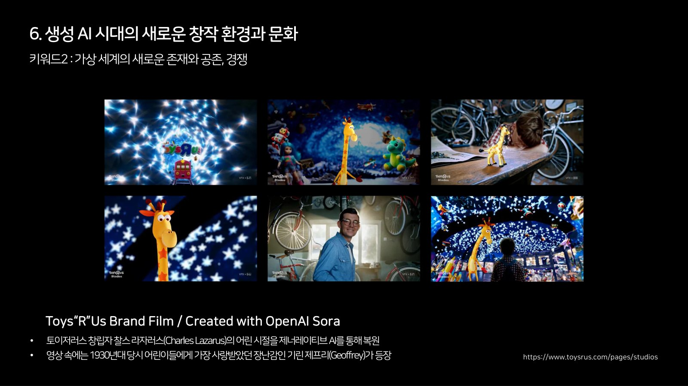
이 영상은 ‘Toys R US’의 영상 광고인데요, OpenAI의 AI 기반 생성 영상 솔루션인 Sora를 사용해 제작된 것으로 알려져 큰 화제가 되기도 했습니다. 이 광고 속에는 토이저러스 창립자 ‘찰스 라자러스(Charles Lazarus)’가 어린 시절을 보냈던 1930년대를 배경으로 당시 어린이들에게 가장 사랑받았던 장난감이자 마스코트인 기린 ‘제프리(Geoffrey)’가 등장하는데, 이렇게 시간과 공간을 초월하여 우리는 역사 속의 한 인물과 마주하게 되는 경험을 갖게 됩니다.
‘AI Agent’라는 개념은 이제 매력적인 캐릭터, 세계관 등의 IP와 결합해서 가상 세계 속에서 영속적으로 존재하며 살아가는 ‘AI Persona’라는 개념으로 발전하고 있습니다. 아직까지는 주로 Chatbot 등의 형태로 구현되고 있는 상황이지만, 점차 기술의 완성도가 높아져 감에 따라 가상 세계 뿐 아니라 현실 세계의 다양한 상황과 맥락 가운데서도 경험되는 다양한 형태로 진화해 나갈 것으로 기대됩니다. 이러한 AI 페르소나의 대상은 인기 IP에 국한되지 않습니다. 나 자신을 포함한 우리 모두가 그 대상이 될 수 있고, 이렇게 생성된 또 다른 나는 가상 세계 속에서 또 다른 과거와 현재의 인물들, 혹은 미래의 상상 속 인물들과 뒤섞여 살아가게 될지도 모릅니다.
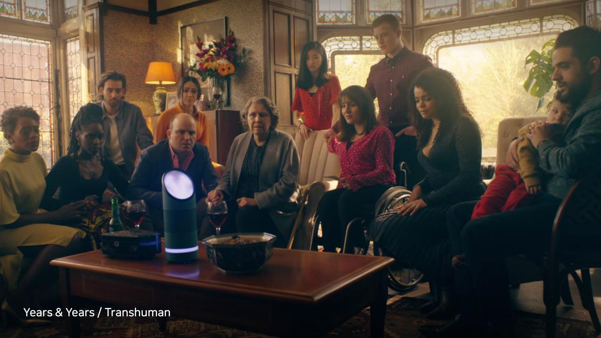
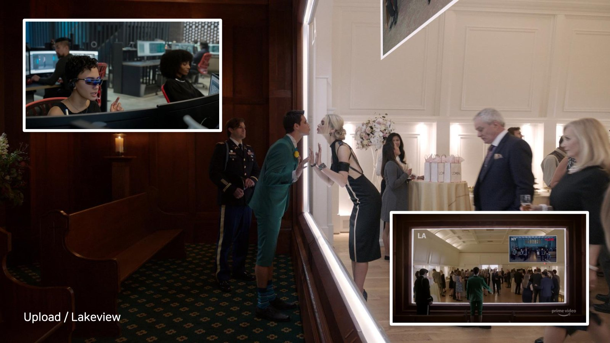
드라마 ‘Years & Years’에는 생애를 마친 한 사람의 삶이 기술을 통해 복원되어 현실 세계의 가족들과 다시 재회하게 되는 장면이 등장합니다. 애써 정의한다면 ‘디지털 영생(Digital Immortality)’ 정도로 표현할 수 있을 것 같네요. 또 다른 드라마인 ‘Upload’에 등장하는 ‘Lake View’라는 가상 세계는 생전에 지불한 금액에 따라 디지털로 업로드 된 자신이 누릴 수 있는 서비스의 범위와 품질이 결정되는 ‘디지털 사후 세계’입니다. 인상적이었던 장면은 디지털 사후 세계에 도착한 주인공이 현실 세계의 자신의 장례식에 참석하는 장면인데요, 어디까지나 재미를 위해 가공된 컨셉과 스토리이지만 이쯤 되면 앞으로 우리 앞에 펼쳐질 현재가 되지 말라는 법도 없을 것 같습니다.
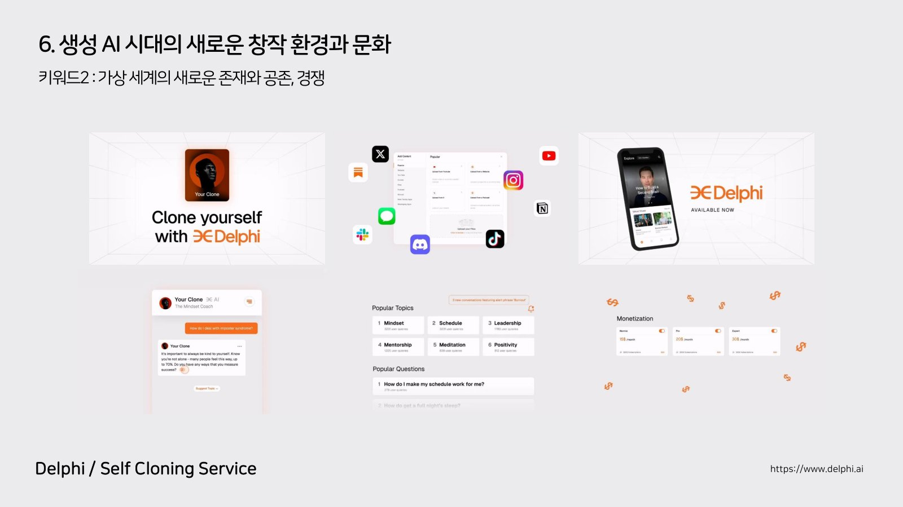
‘Delphi’라는 이 서비스는 그동안 자신이 사용해왔던 여러 SNS 서비스 계정을 연동함으로써 자신과 유사하게 사고하고 대화할 수 있는 AI 페르소나를 제공합니다. 이렇게 생성된 페르소나는 무수히 복제되어 쉬지 않고 자신을 필요로 하는 여러 사람들과 동시적으로 상호작용하며 소유자에게 수익을 전해줍니다.
6–3. 무한한 가능성을 가진 새로운 창작 엔진
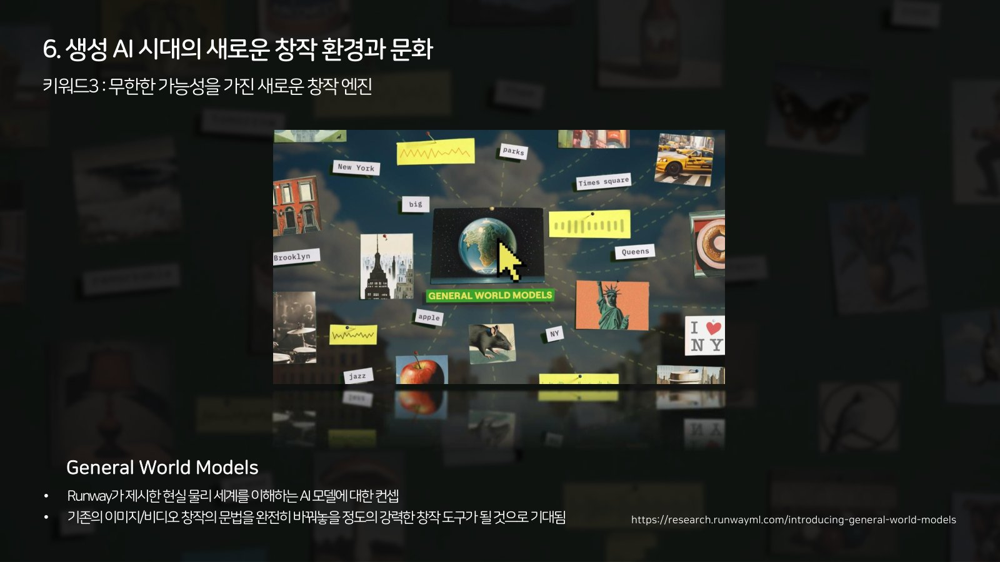
최근 Gen-3라는 강력한 영상 생성 도구를 선보인 Runway가 제시한 ‘보편적 월드 모델(General World Models, GWM)’이라는 개념은 기존의 이미지/비디오 창작의 문법을 완전히 바꿔놓을 정도의 강력한 창작 엔진이 될 것으로 기대되고 있습니다. 현실의 3차원 세계를 이해하고 해석할 수 있는 이러한 창작 엔진은 앞서 사람에 의해 창조된 텍스트나 이미지, 영상 등의 가공물로부터 학습하고 모방하는 것을 넘어 우리가 살아가고 있는 물리 세계를 개념적으로 이해하고 새로운 창작물을 생성한다는 점에서 보다 강력한 존재로 느껴집니다. 자세한 원리를 다 이해할 수는 없지만, 저는 마치 이 안에서 수많은 AI 에이전트들이 끊임없이 가상 세계를 시뮬레이션 하며 스스로 상상력을 키워 나가는 장면을 상상하게 됩니다.
테크 영역의 영향력 있는 벤쳐 캐피탈 중 하나인 A16Z는 이러한 개념에 대해 기존의 게임 엔진과는 차별화된 ‘3D Creation Engine’, ‘AI Native Engine’, ‘Cloud Native Engine’, ‘AI World Generator’ 등의 표현을 통해 다음 시대의 창작 엔진의 방향성을 설명합니다. OpenAI의 또 다른 영상 생성 모델인 Sora와 관련해서는 ‘World Simulator’, ‘Surreal Pyhysics’ 등의 표현이 등장하기도 하죠. 하나 같이 아직 우리에게는 낯선 표현들이지만, 머지않아 대다수의 사람들이 직관적으로 이해하고 소통할 수 있는 범용적인 표현이 정립되지 않을까 생각해봅니다. 개인적으로는 지금의 혼잡하고 다양한 개념, 표현들이 공존하는 상황이 매우 흥미롭습니다.
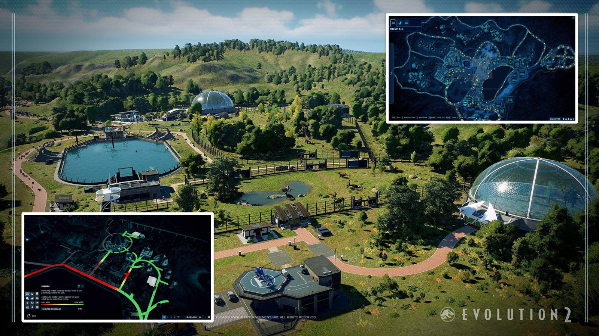
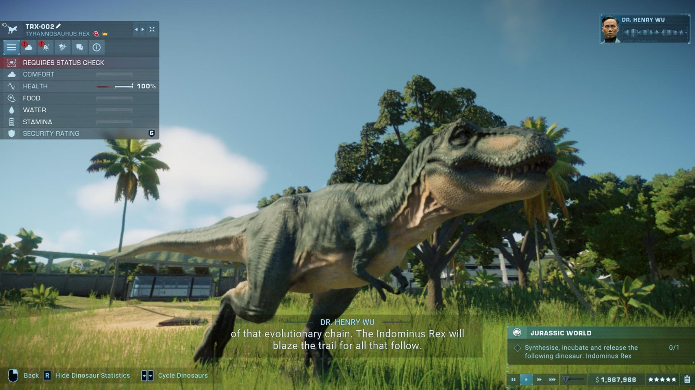
우리가 기억하는 공룡이 살았던 시대의 모습은 대부분 학자들의 연구에 창작자의 상상력이 더해진 영화, 게임 등을 통해 표현된 것들입니다. 최근 판매되는 ‘쥬라기 월드 레볼루션2’ 같은 시뮬레이션 게임은 그 자체로 누구도 실제로 경험해보지 못했던 세상에 대한 재현이라고 볼 수도 있습니다. 이 게임을 구현하기 위해 개발된 엔진에서는 게임에 등장하는 수많은 공룡들이 자율적인 주체로 살아가고 있습니다.
게임 속에서 우리는 마치 미지의 세계를 탐험하고 관찰하는 탐험가의 역할에 몰입하게 됩니다. 새로운 창작 엔진이 창작자들의 손에 쥐어진다면 우리들 한 명 한 명은 날마다 새로운 지구, 혹은 같은 시대에 대한 다양한 해석과 표현을 담아낸 가상 세계를 창조하게 될지도 모릅니다, 마치 최근 드라마로도 제작된 SF 소설 삼체 속 가상 세계처럼 말이죠.
6–4. 다음의 창작 문화를 위한 실험과 도전
지금 보고 계신 이 단어들이 익숙하신 분들도 계실 것이고 그렇지 않은 분들도 계실 것입니다. 머시니마(Machinima, Machine+Cinema)는 게임 내 제공되는 그래픽적인 연출을 제어하고 캡쳐, 편집하여 자신만의 새로운 스토리의 영화를 제작하는 독특한 창작 문화로 한 때 인기를 끌었습니다.
나아가 MOD(Modding from modifying)와 같은 방식은 스킨, 에셋 등의 시각적 요소는 물론, 프로그래밍 수준에서의 물리 엔진, 랜더러, 게임 매커니즘 등을 자신이 원하는 방식으로 편집함으로 새로운 게임 자체를 창착하는 문화로 자리 잡았습니다.
지금 보시는 자연 다큐멘터리 형식의 이 영상은 앞서 소개드린 ‘쥬라기 월드 레볼루션2’로부터 영상을 캡쳐하고 이후 편집 과정을 거쳐 완성된 작품입니다. 과거 BBC가 제작했던 명작 다큐멘터리 ‘Walking With Dinosaurs’를 리메이크하기 위해 크라우드 펀딩을 진행 중인 머시니마의 형식의 프로젝트입니다.
이러한 창작자들은 마치 기술이라는 카메라를 손에 쥐고 가상 세계에 뛰어든 다큐멘터리 제작자와 유사하다는 생각을 갖게 합니다. 지구라는 현실 세계에서는 이제 미지의 세계가 점차 사라져가고 있지만, 가상 세계는 지금도 무한히 생성되며 끝없는 탐험과 관찰의 소재를 창작자들에게 선물합니다.
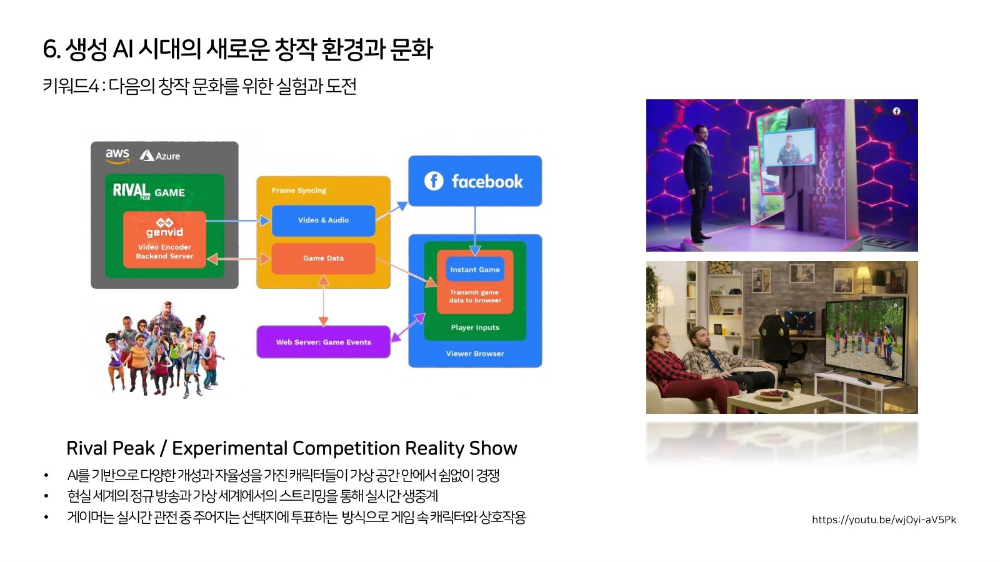
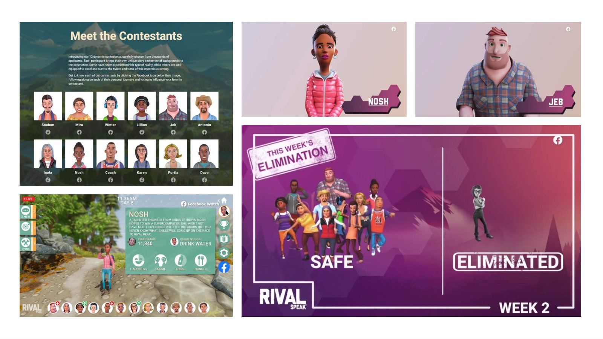
지난 2021년 젠비드 테크놀로지스(Genvid Technologies)는 ‘Experimental Competition Reality Show’라는 새로운 개념의 쇼 콘텐츠인 ‘Rival Peak’를 선보인 바 있습니다. 이 쇼의 배경이 되는 가상 세계의 자연 환경 속에서 AI를 통해 자율적으로 행동하는 참가자 캐릭터들은 생존을 위해 치열하게 경쟁하고, 주 7일, 24시간 내내 스트리밍 되는 쇼를 페이스북 라이브를 통해 관찰하는 감상자들은 자신이 응원하는 캐릭터들과 간접적으로 상호작용하게 됩니다. 국내에서는 참여가 어려운 탓에 직접 경험해볼 기회는 없었지만, AI 캐릭터들이 생존을 위해 노력하는 가상의 경쟁 사회를 감상하며 감정 이입을 갖게 되는 경험은 과연 어떤 것이었을까 하는 궁금함이 들었습니다.
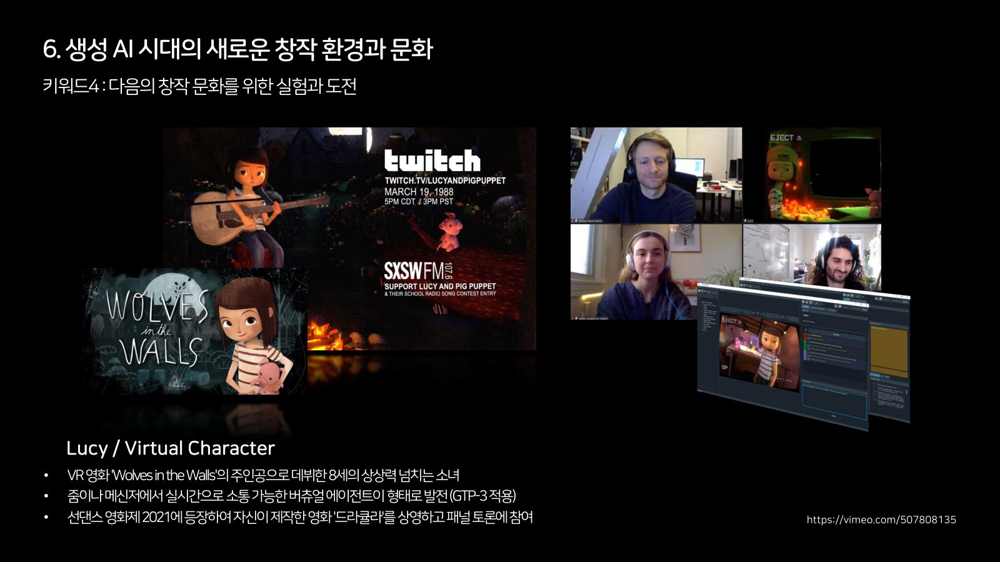
‘Fable Studio’는 높은 완성도로 주목 받았던 VR 단편 영화 ‘Wolves in the Walls’ 속 주인공인 ‘Lucy’라는 8세 소녀를 AI 캐릭터로 점차 발전시켰는데, 이후 Lucy는 선댄스 영화제, SXSW 등 권위 있는 이벤트에서 활약하는 등 파격적인 행보를 이어가게 됩니다. 그리고 이러한 경험들을 바탕으로 기존의 영상 콘텐츠 방식을 떠나 AI 캐릭터 기반의 새로운 콘텐츠 제작 방식인 ‘Generative TV shows’라는 개념을 새롭게 제시합니다.
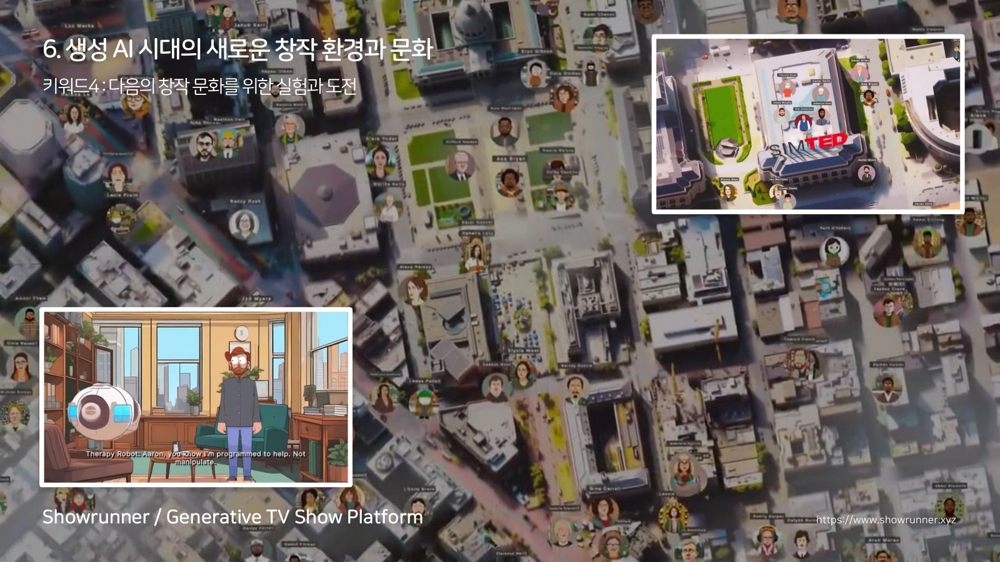
지금 보고 계신 인기 TV 쇼인 ‘South Park’의 에피소드는 Fable Studio의 ‘Showrunner’를 통해 생성된 에피소드입니다. 이들은 실험을 위해 기존 South Park로부터 약 1,200개의 캐릭터와 600개의 배경 이미지로 구성된 포괄적인 데이터 세트를 수집하고 모델을 구축했습니다. 22분 정도 길이의 새로운 에피소드를 제작하기 위한 창작자의 역할은 심플한 인터페이스를 통해 신규 에피소드에 대한 기본 설정과 간략한 컨셉을 입력하는 것 정도가 전부입니다. 생성된 South Park 고유의 AI 캐릭터에 시각적 스타일, 내러티브, 스크립트 등이 더해져 하나의 완결성 있는 에피소드가 탄생하게 됩니다.
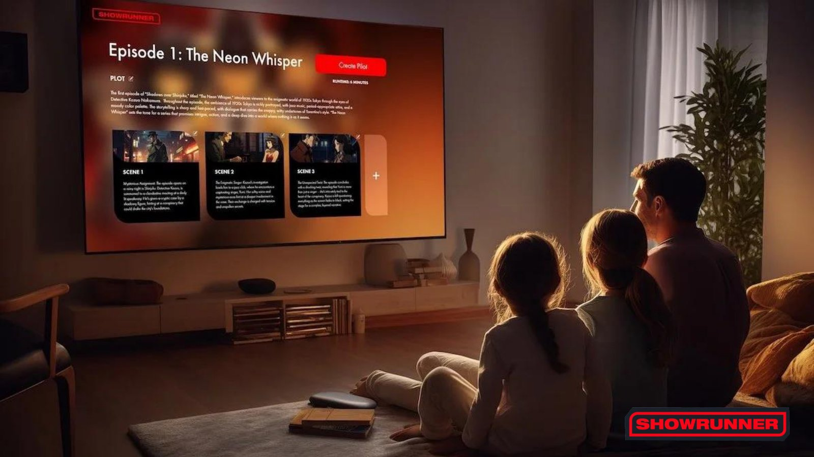
현재 Showrunner는 다양한 TV 쇼의 탬플릿이 제공되고 있는데, 이를 통해 우리는 지금의 넷플릭스, 아마존 프라임 등의 OTT를 넘어, 감상자가 원하는 콘텐츠가 실시간으로 생성되어 제공되는 ‘생성 AI 기반 OTT’를 상상하게 됩니다.
07발표를 마무리하며
7–1. 창작의 미래에 대한 질문
오늘 발표의 주제를 ‘자율 세계를 구축하기 위한 새로운 창작 문화’로 결정하면서 한 가지 망설였던 점이 있다면, 급변하는 상황 가운데 그것을 ‘문화’라는 표현으로 정의하는 것이 적절한가에 대한 고민이었습니다. 흥미로우면서도 때때로 혼란스럽고, 두렵기까지한 지금의 상황 가운데, 창작자의 역할 그리고 그 안에서의 창의성과 전문성은 앞으로 어떤 의미를 가지게 될까요. 나아가 앞으로 어떤 방식으로 지속 가능한 창작과 수익화가 가능할까요?
7–2. 연결과 공명을 통한 새로운 창작 문화
저는 ‘문화’라는 표현의 전제에는
- 더불어 존재하며
- 연결되고
- 상호작용하며
- 공유하고 확산하는 것
의 의미가 내포된다고 생각합니다. 오늘 나눈 이야기들이 더 많은 사람들과 공명하며 보다 다양한 생각과 깊이 있는 논의로 발전할 수 있기를 기대해봅니다. 그리고 나아가 흩어진 창작자 한 사람, 한 사람이 아닌, 새로운 창작 문화에 기여하며 함께 성장하는 우리가 될 수 있었으면 하는 바램입니다. 감사합니다.